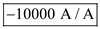
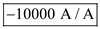
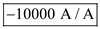

Closed loop gain  of the amplifier is,
of the amplifier is,
Substitute 100 for  and
and  for
for  in the equation
in the equation
Solve for  .
.
Open loop gain  of the current amplifier is.
of the current amplifier is.
Loop gain of the amplifier is,
Substitute for  in the equation.
in the equation.
Solve for  in the equation.
in the equation.
Refer to the circuit diagram of feedback current amplifier in figure 10.31(a) in the textbook.
Closed loop gain of the current amplifier is.
Feedback amount of the amplifier is,
Solve for .
Closed loop gain of the amplifier is,
Substitute 100 for and for in the equation
Solve for .
Open loop gain of the current amplifier is.
Loop gain of the amplifier is,
Substitute for in the equation.
Solve for in the equation.
Open loop Input resistance of the amplifier is,

At the equation becomes:
Input resistance  of the closed loop amplifier is,
of the closed loop amplifier is,
The third component on the right-hand side is the smallest since  is very large. Thus,
is very large. Thus,
…… (1)
If we assume that then
Substitute  for
for  in the equation.
in the equation.
Substitute for  and for
and for  in the equation.
in the equation.
…… (2)
Define feedback factor.
Substitute for  and for in the equation.
and for in the equation.
Solve for .
.

Thus, resistance  is.
is.

Substitute  for
for  in the equation.
in the equation.
Thus, resistance  is.
is.
Recall equation (1)
 Rewrite the equation.
Rewrite the equation.
Substitute  for
for  in the equation.
in the equation.
Input resistance of open loop amplifier is,
At  and .
and .
Substitute for  and for
and for  in the equation.
in the equation.
Trans-conductance  of the transistor is
of the transistor is
Output resistance  is
is 
Since 
Substitute  for
for  ,
,  for
for  , for
, for  , for
, for  , for
, for  and
and  for
for  in the equation.
in the equation.
Solve for  .
.
The output resistance of the open loop amplifier is,
Substitute for  ,
,  for
for  and for in the equation.
and for in the equation.
The output resistance of the amplifier  is .
is .
The output resistance of the closed loop amplifier is,
Substitute for  and
and  for
for  in the equation.
in the equation.
The output resistance seen through the load  is,
is,
Substitute  for
for  and for
and for  in the equation.
in the equation.
Thus, output resistance seen through the load  is .
is .